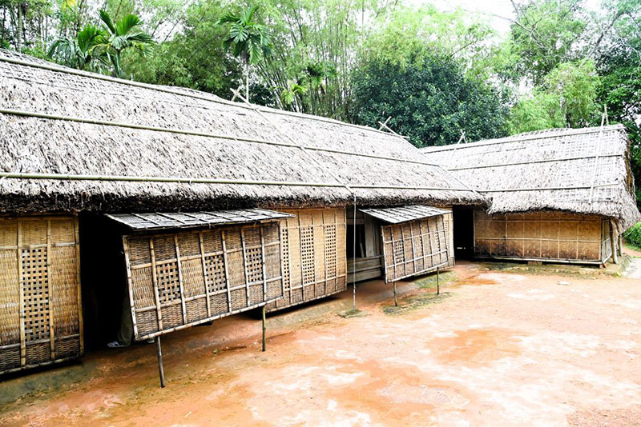
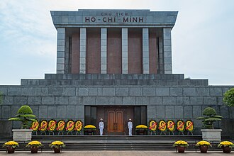
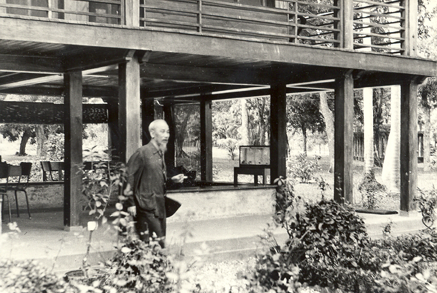
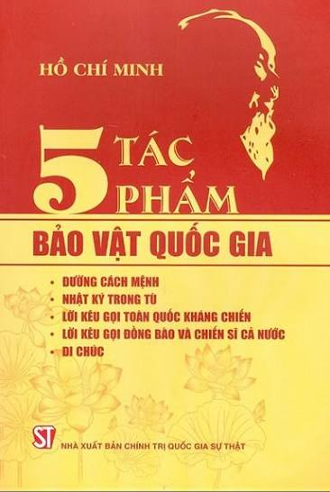
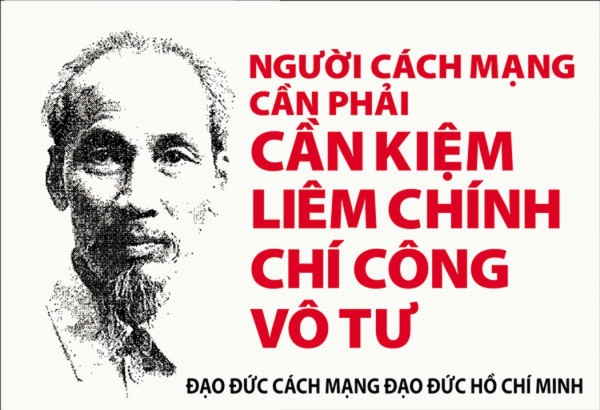
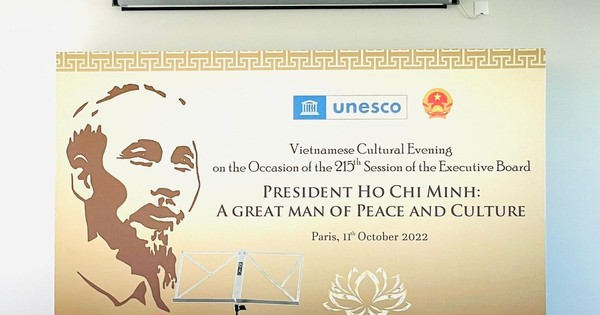

1890 — 1969
Di Sản
Chủ Tịch
Hồ Chí Minh
Tư tưởng · Đạo đức · Di tích · Bảo vật
Nhấn góc trang để lật
Đang tải album...
Di sản văn hóa · Tư tưởng · Đạo đức
1890 — 1969
Tư tưởng · Đạo đức · Di tích · Bảo vật
Nhấn góc trang để lật

🏛️ Di tích quốc gia đặc biệt
Nằm tại xã Kim Liên, huyện Nam Đàn, tỉnh Nghệ An — nơi sinh của Chủ tịch Hồ Chí Minh. Khu di tích gồm 2 cụm, 14 di tích thành phần: nhà cụ Phó bảng Nguyễn Sinh Sắc, nhà quê ngoại Hoàng Trù, mộ bà Hoàng Thị Loan, núi Chung, giếng Cốc... Được xếp hạng di tích quốc gia đặc biệt năm 2012.

⚱️ Công trình thiêng liêng
Tọa lạc tại Quảng trường Ba Đình, Hà Nội — nơi Bác đọc Tuyên ngôn Độc lập năm 1945. Lăng cao 21,6m, rộng 41,2m, thiết kế theo 4 phương châm: hiện đại, dân tộc, trang nghiêm, giản dị. Mặt ngoài ốp đá granite xám, mái chồng diêm truyền thống. Khuôn viên có 79 cây vạn tuế tượng trưng 79 mùa xuân của Người.

🏡 Biểu tượng giản dị
Khánh thành 17/5/1958, do kiến trúc sư Nguyễn Văn Ninh thiết kế. Nhà sàn gỗ dổi 2 tầng (10,5m × 6,2m), mái lợp ngói, bên cạnh có ao cá. Đây là nơi Bác sống và làm việc 11 năm cuối đời (1958–1969), tiếp đón nguyên thủ quốc gia và hàng triệu đồng bào. Biểu tượng cho lối sống thanh bạch, cần kiệm.
"Anh dắt em vào cõi Bác xưa / Đường xoài hoa trắng nắng đu đưa..." — Tố Hữu
🏛️ Phủ Chủ Tịch · 10 hecta
Khu di tích Phủ Chủ tịch gồm nhiều công trình: Nhà 54 (nơi ở đầu tiên 1954), Nhà sàn (1958–1969), Phòng họp Bộ Chính trị, Nhà 67 (nơi Bác dưỡng bệnh và trút hơi thở cuối cùng). Lưu giữ hơn 1.456 hiện vật quý giá, trong đó 759 hiện vật đang trưng bày.

📜 Bảo vật quốc gia
Được công nhận theo Quyết định số 1426/QĐ-TTg (01/12/2012):
Tuyển chọn từ bộ sách Hồ Chí Minh toàn tập 15 tập (2021)

💎 Tư tưởng & Đạo đức
Hệ thống quan điểm toàn diện về độc lập dân tộc gắn liền với chủ nghĩa xã hội. Tấm gương cần, kiệm, liêm, chính, chí công vô tư, suốt đời phục vụ nhân dân. Xây dựng khối đại đoàn kết toàn dân tộc làm nền tảng cho mọi thắng lợi.
"Tôi chỉ có một sự ham muốn, ham muốn tột bậc, làm sao cho nước ta được độc lập, dân ta được tự do, đồng bào ai cũng có cơm ăn áo mặc, ai cũng được học hành."

🌏 UNESCO · Danh nhân văn hóa
UNESCO công nhận Danh nhân văn hóa kiệt xuất (1987). Tên Người được đặt cho nhiều đường phố, công viên, trường học trên khắp thế giới. Các di tích tại Việt Nam thu hút hàng triệu lượt khách mỗi năm. Di sản tinh thần của Người tiếp tục soi đường cho các thế hệ mai sau.
"Hồ Chí Minh đã làm rạng rỡ
dân tộc Việt Nam,
đồng thời làm rạng rỡ
những dân tộc bị áp bức
trên thế giới."
— Tuyên ngôn của UNESCO, 1987
Di sản Hồ Chí Minh · Vĩnh hằng
Nhấn góc trang hoặc dùng nút để lật · Vuốt trên mobile